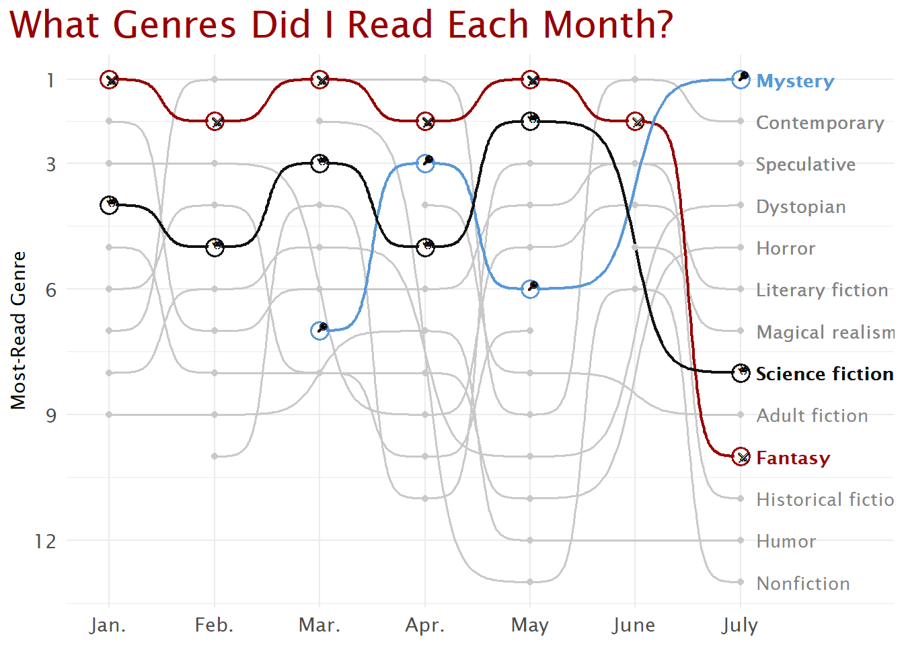
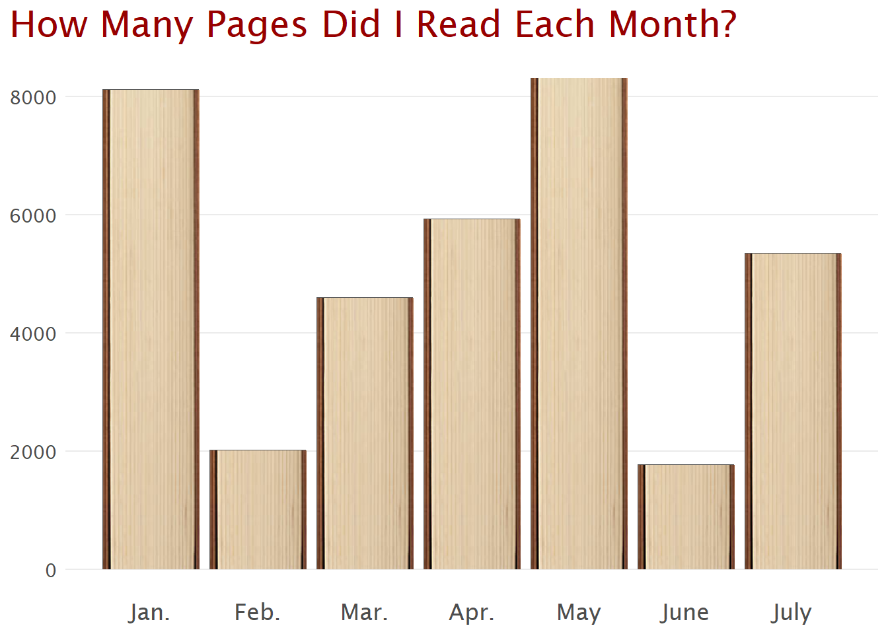
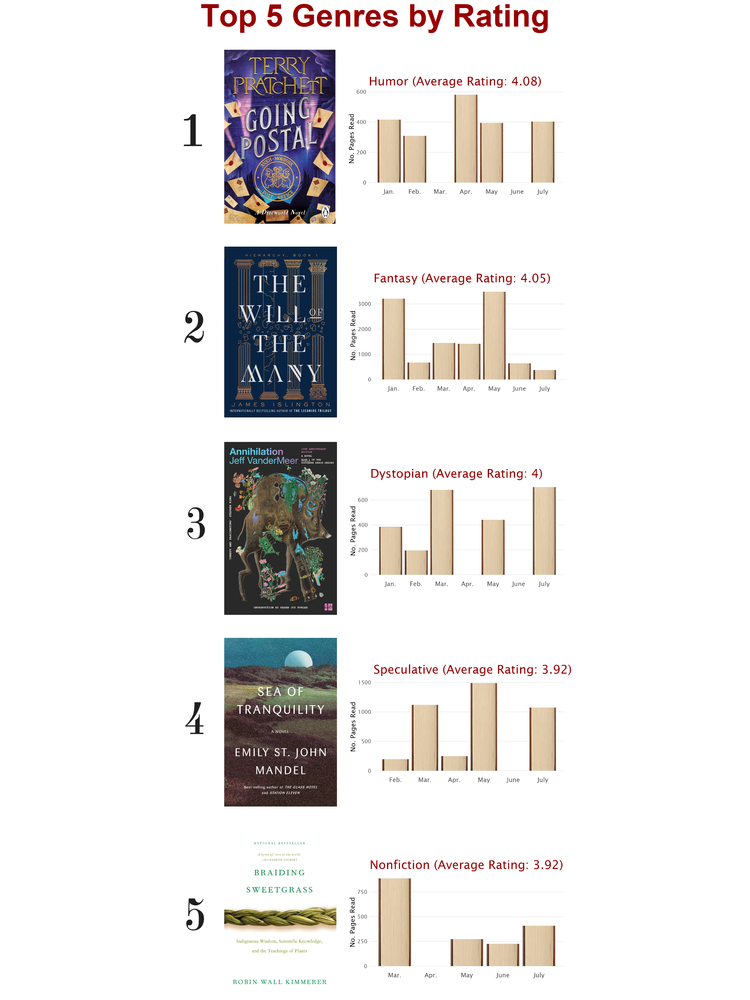

library(readxl)
library(tidyverse)
library(ggbump)
library(ggpattern)
library(paletteer)
library(magick)
library(ggimage)
library(extrafont)2025 Book Data
What genres of books have I read so far in 2025 and how many pages have I read? A short little data visualization exercise. Credit to the Libby app and Goodreads for helping me keep track of all the books I read, and to this example from the R graph gallery for inspiring my genre bump plot.
font_import(pattern = "Lucida Sans")Importing fonts may take a few minutes, depending on the number of fonts and the speed of the system.
Continue? [y/n] Exiting.loadfonts(device = "win")Lucida Sans already registered with windowsFonts().bookdata <- read_xlsx("bookdata.xlsx")
# Data manipulation to draw out books w/ multiple genres
# and rank genre by most read per month
bookdata_bump <- bookdata |>
separate_rows(Genre, sep = ", ") |>
mutate(
.by = Month,
genre_rank = match(
Genre, names(sort(table(Genre), decreasing = TRUE))
)
)
# histogram of pages read each month
bookdata_hist <- bookdata |>
select(Month, Pages) |>
summarise(.by = Month, sum_pages = sum(Pages)) |>
mutate(Month_str = case_when(
Month == 1 ~ "Jan.",
Month == 2 ~ "Feb.",
Month == 3 ~ "Mar.",
Month == 4 ~ "Apr.",
Month == 5 ~ "May",
Month == 6 ~ "June",
Month == 7 ~ "July"),
image_file = "imgs/bookimage6.png"
)
# Top genres by rating dataframe
bookdata_ratings <- bookdata |>
separate_rows(Genre, sep = ", ") |>
mutate(
.by = Genre,
avg_rating = mean(Rating),
image_file = "imgs/bookimage6.png"
) |>
mutate(
.by = c(Month, Genre),
sum_pages = sum(Pages)
) |>
select(Month, Genre, avg_rating, sum_pages, image_file) |>
distinct() |>
arrange(desc(avg_rating))
# Get individual dataframes for top 5 rated genres
ratings_1 <- bookdata_ratings |>
filter(avg_rating == max(avg_rating))
ratings_2 <- bookdata_ratings |>
filter(avg_rating == sort(unique(avg_rating), TRUE)[2])
ratings_3 <- bookdata_ratings |>
filter(avg_rating == sort(unique(avg_rating), TRUE)[3])
ratings_4 <- bookdata_ratings |>
filter(avg_rating == sort(unique(avg_rating), TRUE)[4])
ratings_5 <- bookdata_ratings |>
filter(avg_rating == sort(unique(avg_rating), TRUE)[5])
fave_genres <- c("Fantasy", "Science fiction", "Mystery")
other_genres <- setdiff(unique(bookdata_bump$Genre), fave_genres)Bump Plot
In this plot, we use a bump plot to explore the ranking of genres read every month. Ranking is defined as the number of times I read a book of that genre in a month. Books can have multiple genres, in which case their genres are counted separately.
book_bump_plot <- bookdata_bump |>
ggplot(aes(x = Month, y = genre_rank, group = Genre)) +
# Add light lines for non-favorite genres
geom_bump(color = "#c9c9c9", lwd = 0.6,) +
geom_bump(aes(color = Genre), lwd = 0.8,
data = ~. |> filter(Genre %in% fave_genres)) +
geom_point(color = "#c9c9c9",
data = ~. |> filter(Genre %in% other_genres)) +
geom_point(color = "white", size = 3,
data = ~. |> filter(Genre %in% fave_genres)) +
geom_point(aes(color = Genre),
size = 4, shape = 21, stroke = 1,
data = ~. |> filter(Genre %in% fave_genres)) +
# Add custom swords symbol for fantasy
geom_point(shape = "\u2694", size = 2,
data = ~. |> filter(Genre == "Fantasy"),
position = position_nudge(x = 0.025)) +
# Add custom question mark symbol for mystery
geom_point(shape = "🔎", size = 2,
data = ~. |> filter(Genre == "Mystery"),
position = position_nudge(x = 0.025)) +
# Add custom symbol for science fiction
geom_point(shape = "👾", size = 2,
data = ~. |> filter(Genre == "Science fiction"),
position = position_nudge(x = 0.025)) +
# Add labels for genres
geom_text(aes(label = Genre, color = Genre),
x = 7.15, size = 3.5, hjust = 0,
fontface = "bold", family = "Lucida Sans",
data = ~. |> filter(Genre %in% fave_genres &
Month == 7)) +
geom_text(aes(label = Genre), color = "#838383",
x = 7.15, size = 3.5, hjust = 0, family = "Lucida Sans",
data = ~. |> filter(Genre %in% other_genres &
Month == 7)) +
# Scale x and y axes for readability and style
scale_x_continuous(breaks = seq(1, 7, 1),
minor_breaks = seq(1, 7, 1),
labels = c("Jan.", "Feb.", "Mar.", "Apr.",
"May", "June", "July"),
limits = c(0.95, 8.1)) +
scale_y_reverse(breaks = c(1, 3, 6, 9, 12, 15)) +
# Manually set color and font themes
scale_color_manual(values = c("#970000", "#5998d6", "#111111")) +
labs(x = NULL, y = "Most-Read Genre",
title = "What Genres Did I Read Each Month?") +
theme_minimal() +
theme(legend.position = "none",
text = element_text(family = "Lucida Sans"),
plot.title = element_text(color = "#970000",
size = 21),
plot.title.position = "plot",
axis.text = element_text(size = 11))
book_bump_plot
Histogram of Pages Read
Some months I read a lot, and other months I’m very busy and don’t manage to make it through my to-read pile. What months was I able to squeeze in the most pages?
book_hist_plot <- bookdata_hist |>
ggplot(aes(x = Month, y = sum_pages)) +
geom_col_pattern(
aes(pattern_filename = image_file),
pattern = 'image',
pattern_type = 'tile',
pattern_filter = 'box',
pattern_scale = -1
) +
scale_pattern_filename_discrete(choices = bookdata_hist$image_file) +
scale_x_continuous(breaks = seq(1, 7, 1),
labels = c("Jan.", "Feb.", "Mar.", "Apr.",
"May", "June", "July")) +
labs(x = NULL, y = NULL,
title = "How Many Pages Did I Read Each Month?") +
theme_minimal() +
theme(legend.position = "none",
text = element_text(family = "Lucida Sans"),
axis.text = element_text(size = 11),
axis.text.x = element_text(size = 13),
plot.title = element_text(color = "#970000",
size = 21),
plot.title.position = "plot",
panel.grid.major.x = element_blank(),
panel.grid.minor = element_blank())
book_hist_plot
Top 5 Genres by Rating
Every year, Spotify Wrapped comes around and I see all the beautiful data that Spotify presents to me and my friends. In an attempt to emulate that presentation, I’ve compiled my top 5 genres by rating, with the book cover of my favorite book in each genre this year and a histogram of pages read by month. Ratings are out of 5.
# Helper function to make barcharts for top 5 genre ratings
# since each genre will have the same style of barchart
make_custom_barchart <- function(
df_ratings
) {
p <- df_ratings |>
ggplot(aes(x = Month, y = sum_pages)) +
geom_col_pattern(
aes(pattern_filename = image_file),
pattern = 'image',
pattern_type = 'tile',
pattern_filter = 'box',
pattern_scale = -1
) +
scale_pattern_filename_discrete(choices = df_ratings$image_file) +
scale_x_continuous(breaks = seq(1, 7, 1),
labels = c("Jan.", "Feb.", "Mar.", "Apr.",
"May", "June", "July")) +
labs(x = NULL, y = "No. Pages Read",
title = glue::glue("{df_ratings$Genre[1]} (Average Rating: {round(df_ratings$avg_rating[1], 2)})")) +
theme_minimal() +
theme(legend.position = "none",
text = element_text(family = "Lucida Sans"),
axis.text = element_text(size = 11),
axis.text.x = element_text(size = 13),
axis.title.y = element_text(size = 14),
plot.title = element_text(color = "#970000",
size = 25),
panel.grid.major.x = element_blank(),
panel.grid.minor = element_blank(),
plot.margin = unit(c(2, 1, 2, 1), 'cm')
)
p
}Now that we’ve defined the helper function for creating the pages read per month histogram, we can actually make the visualization.
# Humor
rating_plot_1 <- make_custom_barchart(ratings_1)
ggsave(filename = "plots/ratingplot1.jpeg",
plot = rating_plot_1,
width = 7,
height = 5)
ratingplot1 <- image_read("plots/ratingplot1.jpeg")
bookcover1 <- image_read("imgs/goingpostal.jpg") |>
image_scale("975x1514")
numberone <- image_read("imgs/numberone.png") |>
image_scale("500x1000")
img_combined_1 <- c(numberone, bookcover1, ratingplot1)
full_rating_1 <- image_append(img_combined_1)
# Fantasy
rating_plot_2 <- make_custom_barchart(ratings_2)
ggsave(filename = "plots/ratingplot2.jpeg",
plot = rating_plot_2,
width = 7,
height = 5)
ratingplot2 <- image_read("plots/ratingplot2.jpeg")
bookcover2 <- image_read("imgs/willofthemany.jpg") |>
image_scale("980x1540")
numbertwo <- image_read("imgs/numbertwo.png") |>
image_scale("500x1000")
img_combined_2 <- c(numbertwo, bookcover2, ratingplot2)
full_rating_2 <- image_append(img_combined_2)
# Dystopian
rating_plot_3 <- make_custom_barchart(ratings_3)
ggsave(filename = "plots/ratingplot3.jpeg",
plot = rating_plot_3,
width = 7,
height = 5)
ratingplot3 <- image_read("plots/ratingplot3.jpeg")
bookcover3 <- image_read("imgs/annihilation.jpg") |>
image_scale("980x1535")
numberthree <- image_read("imgs/numberthree.png") |>
image_scale("500x1000")
img_combined_3 <- c(numberthree, bookcover3, ratingplot3)
full_rating_3 <- image_append(img_combined_3)
# Speculative
rating_plot_4 <- make_custom_barchart(ratings_4)
ggsave(filename = "plots/ratingplot4.jpeg",
plot = rating_plot_4,
width = 7,
height = 5)
ratingplot4 <- image_read("plots/ratingplot4.jpeg")
bookcover4 <- image_read("imgs/seaoftranquility.jpg") |>
image_scale("980x1540")
numberfour <- image_read("imgs/numberfour.png") |>
image_scale("500x1000")
img_combined_4 <- c(numberfour, bookcover4, ratingplot4)
full_rating_4 <- image_append(img_combined_4)
# Nonfiction
rating_plot_5 <- make_custom_barchart(ratings_5)
ggsave(filename = "plots/ratingplot5.jpeg",
plot = rating_plot_5,
width = 7,
height = 5)
ratingplot5 <- image_read("plots/ratingplot5.jpeg")
bookcover5 <- image_read("imgs/braidingsweetgrass.jpg") |>
image_scale("975x1514")
numberfive <- image_read("imgs/numberfive.png") |>
image_scale("500x1000")
img_combined_5 <- c(numberfive, bookcover5, ratingplot5)
full_rating_5 <- image_append(img_combined_5)
# Combining all images together with a white background spacer
spacer <- image_read("imgs/whitebg.png") |>
image_crop("3080x200")
full_images <- c(spacer, full_rating_1, spacer,
full_rating_2, spacer, full_rating_3,
spacer, full_rating_4, spacer,
full_rating_5)
full_rating <- image_append(full_images, stack = TRUE)
image_write(full_rating, path = "plots/full_rating.png",
format = "png")book_ratings_plot <- bookdata |>
ggplot(aes(x = Month, y = Rating)) +
theme_void() +
geom_image(
data = tibble(Month = 8, Rating = 4),
aes(image = "plots/full_rating.png"),
size = 0.42
) +
labs(title = "Top 5 Genres by Rating") +
theme(plot.title = element_text(color = "#970000",
size = 45,
face = "bold",
hjust = 0.5))
book_ratings_plot
ggsave(filename = "plots/bookbump.jpeg",
plot = book_bump_plot,
width = 9,
height = 7)
ggsave(filename = "plots/bookhist.jpeg",
plot = book_hist_plot,
width = 9,
height = 7)
ggsave(filename = "plots/bookratings.jpeg",
plot = book_ratings_plot,
width = 15,
height = 20)